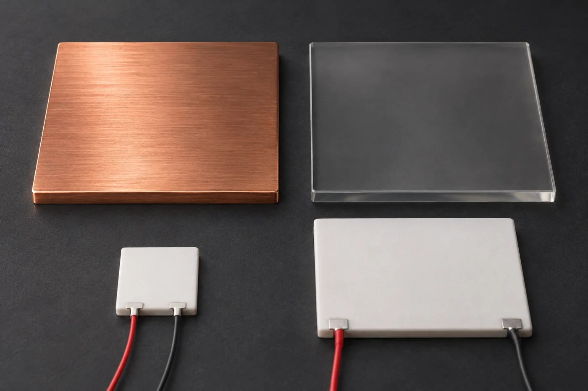
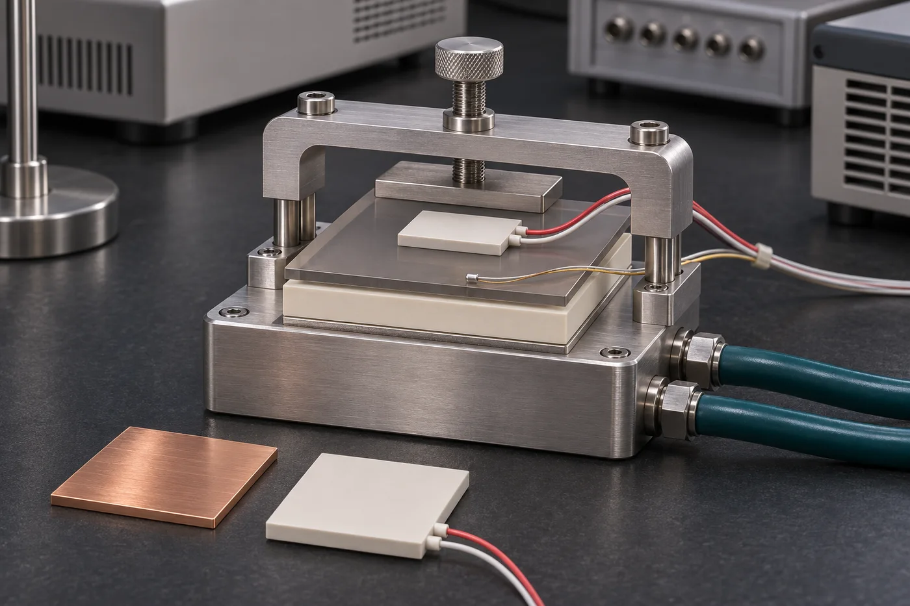

What we intended
Compare a diamond heat spreader with copper and direct contact under a declared thermal load.
A proposed long-duration power system yields a narrower comparison of thermal interfaces.
Materials comparison proposedCompare a diamond heat spreader with copper and direct contact under a declared thermal load.
The public note identifies mounting conditions as a competing explanation for an apparent material advantage. It documents no measured gain or operating-life result.
Repeated mounting trials could help assess contact variability in ordinary heat-spreader measurements.
Use matched geometry, heater input and contact force. Remount each interface and compare the spread of measured heat flow and electrical output.
Diamond Thermoelectric Power Source · public design note
The proposed test and crossover are open questions.


